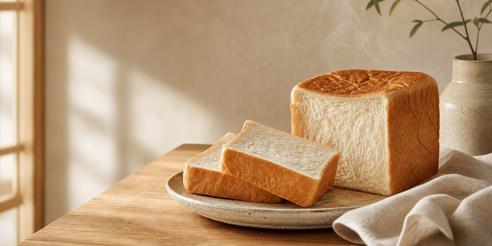

Soft daily loaves
Our breads are mixed, proofed, and baked in small runs so every loaf keeps its cloud-soft crumb.

Fresh bread • baked daily
Pillowy milk bread, butter-rich loaves, and small treats baked in calm batches for breakfast, gifting, and slow afternoons.
Simple ingredients, patient fermentation, and a menu built around bread that feels warm before it even reaches the table.
Why people come back
Our breads are mixed, proofed, and baked in small runs so every loaf keeps its cloud-soft crumb.
Choose classic milk bread, honey butter, matcha azuki, cinnamon pull-apart, and seasonal bakery specials.
Pick your loaves, add delivery details, and see the total before sending the order to the bakery.
Today at Mardi's
Order one day ahead for the widest choice. Same-day delivery opens when extra loaves are available.